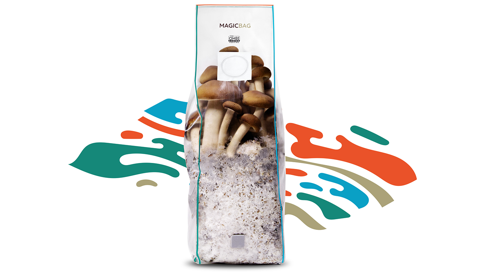

Genetics & Cultivation
Industry-leading liquid cultures and all-in-one grow bags for seamless, contamination-free cultivation.
The Science of Mycology
Advancements in liquid culture technology have revolutionized both taxonomic research and gourmet cultivation. By isolating robust mycelial strains in nutrient broth, researchers achieve rapid colonization times and higher resistance to contamination compared to traditional multi-spore methods.
Paired with modern all-in-one substrate bags, the barrier to entry for mycological study and at-home cultivation has never been lower.
LEGAL NOTICE: Liquid cultures of specific species are intended strictly for microscopy or legal cultivation purposes depending on your jurisdiction. Always verify local laws regarding the cultivation of active species before purchasing.

Myyco Liquid Culture Syringe
Premium, lab-tested isolated liquid cultures. Guaranteed 100% sterile and densely packed with vigorous mycelium for rapid inoculation.
Continue to Myyco
MagicBag All-In-One Grow Bag
The easiest way to grow. Pre-sterilized grain and compost blend in a single bag with an injection port and micron filter. Just inoculate and wait.
Continue to MagicBag